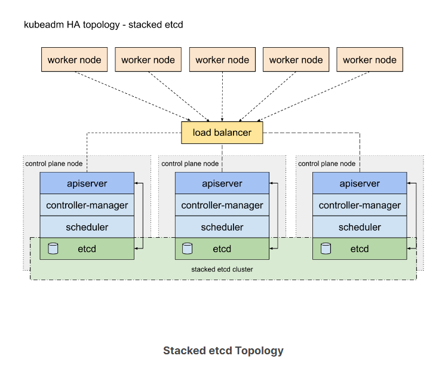
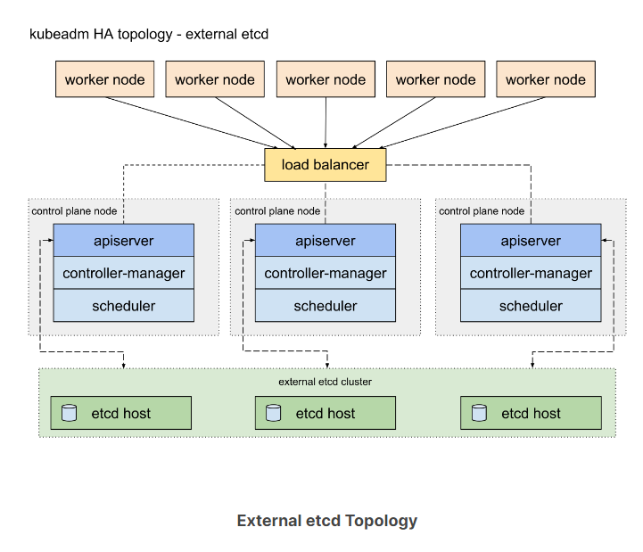

Contents
¿What is Kubernetes?
Commonly referred to as K8s, is an orchestration engine for container technologies such as Docker and rkt that is taking over the DevOps scene in the last couple of years. It is already available on Azure, AWS and Google Cloud as a managed service.
Kubernetes can speed up the development process by making easy, automated deployments, updates (rolling-update) and by managing our apps and services with almost zero downtime. It also provides self-healing. Kubernetes can detect and restart services
when a process crashes inside the container. Kubernetes is originally developed by Google, it is open-sourced since its launch and managed by a large community of contributors.
Any developer can package up applications and deploy them on Kubernetes with basic Docker knowledge.
What is K8S made up of?
Kubectl
A CLI tool for Kubernetes.
Master Node
- The main machine that control the nodes
- Main entrypoint for all administrative tasks
- It handles the orchestration of the worker nodes
Worker Node
- It's a worker machine in Kubernetes (used to be known as minion)
- This machine performs the requested tasks. Each Node is controlled by the Master Node
- Runs containers inside pods
- This's where the Docker engine runs and takes care of downloading images and starting containers
Kubelet
- Primary node agent
- Ensures that containers are running and healthy
Kubernetes Pod
- A Pod can host multiple containers and storage volumes
- Pods are instances of Deployments (see Deployment)
- One Deployment can have multiple pods
- With Horizontal Pod Autoscaling, Pods of a Deployment can be automatically started and halted based on CPU usage
- Containers within the same pod have access to shared volumes
- Each Pod has its unique IP Address within the cluster
- Pods are up and running until someone (or a controller) destroys them
- Any data saved inside the Pod will disappear without a persistent storage
Deployment
- A deployment is a blueprint for the Pods to be create (see Pod)
- Handles update of its respective Pods.
- A deployment will create a Pod by it’s spec from the template.
- Their target is to keep the Pods running and update them (with rolling-update) in a more controlled way.
- Pod(s) resource usage can be specified in the deployment.
- Deployment can scale up replicas of Pods.
- kubernetes-deployment
Refactoring
Newer, more modern enterprise posses the knowledge and technoloy to build cloud-native applications that power their business.
Unfortunately, that is not the case for established enterprises running on legacy monolithic applications. Some have tried to run monoliths as microservices,
and as one would expect, it did not work very well. The lessons learned were that a monolithic size multi-process application cannot run as a microservice and that other options
had to be explored. The next natural step in the path of the monolithic size multi-process application cannot run as a microservice and that other options had to be explored.
The next natural step in the path of the monolith to microservices transition was refactoring. However, migrating a decades-old application to the cloud through refactoring poses serious
challenges and the enterprise faces the refactoring approach dilemma: a "Big-bang" approach or an incremental refactoring. A so-called "Big-bang" approach focuses all efforts with the refactoring of the monolith,
postponing the development and implementation of any new features - essentually delaying progress and possibly, in the process, even breaking the core of the business, the monolith.
An incremental refactoring approach guarantees that new features are developed and incremented as a modern microservices wich are able to communicate with the monolith through APIs, without appending to the
monolith's code. In the meantime, features are refactored out of the monolith which slowly fades away while all, or most its functionality is modernized into microservices.
This incremental approach offers a gradual transition from a legacy monolith to modern microservices architecture and allows for phased migration of application features into the cloud.
Once an enterprise chose the refactoring path, there are other considerations in the process. Which business componentes to separate from the monolith to become distributed microservices, how to decouple the databases
from the application to separate data complexity from application logic, and how to test the new microservices ant their dependencies, are just a few of the decisions an enterprise is faced with during refactoring.
The refactoring phase slowly transforms the monolith into a cloud-native application which takes full advantage of cloud features, by coding in new programming languages and applying modern architectural patterns.
Through refactoring, a legacy monolith application receives a second chance at life - to live on as a modular system adapted to fully integrate with today's fast-paced cloud automation tools and services.
Challenges
The refactoring path from a monolith to microservices is not smmoth and without challenges. Not all monoliths are perfect candidates for refactoring, while some may not even "survive" such a modernization pahse.
When deciding whether a monolith is a possible candidate for refactoring, there are many possible issues to consider.
When considering a legacy Mainframe based system, written in older programming languages - Cobol or Assembler, it may be more economical to just re-built it from the ground up as a cloud-native application. A poorly designed legacy application should
be re-designed and re-built from scratch following modern architectural patterns for microservices and even containers. Applications tightly coupled with data stores are also poor candidates for refactoring.
Once the monolith survived the refactoring phase, the next challenge is to design mechanismis or find suitable tools to keep alive all the decoupled modules to ensure application resiliency as a whole.
Choosing runtimes may be another challenge. If deploying many modules on a single physical or virtual server, chances are that differente libraries and runtimes environment may conflict with one another causing errores and failures.
This forces deployments of single modules per servers in order to separate their dependencies - not an economical way of resource management, and no real segregation of libraries and runtimes, as each server also has an underlying Operating System running
with its libraries, thus consuming server resources - at times the OS consuming more resources than the application module itself.
Ultimately application containers came along, providing encapsulated lightweight runtime environments for application modules. Containers promised consistent software environments for developers, testers, all the way from Development to Production.
Wide supposrt of containers ensured application portability from physical bare-metal to Virtual Machines, but this time with multiple applications deployed on the very same server, each failures. Other features of containerized application environments are
higher server utilization, individual module scalability, interoperability and easy integration automation tools.
Objectives
- Explain what a monolith is.
- Discuss the monolith's challenges in the cloud.
- Explain the concept of microservices.
- Discuss microservices advantages in the cloud.
- Describe the transformation path from a monolith to microservices.
This controller/management unit is generally referred to as a container orchestrator.
In this chapter, we will explore why we should use container orchestrators, different implementations of container orchestrators, and where to deploy them.
What are containers?
Before we dive into container orchestration, let's review first what containers are.
Containers are an application-centric method to deliver high-performing, scalable applications on any infrastructure of your choice. Containers are best suited to deliver microservices by providing portable, isolated virtual environmets for applications to run without interference from other running applications.
Container encapsulate microservices and their dependencies but do not run them directly. Containers run container images.
A container image bundles the application along with its runtime, libraries and dependencies, and it represents the source of a container deployed to offer an isolated executable environment for the application. Containers can be deployed from a specific image on many platforms, such as workstations, Virtual Machines, public cloud, etc.
What is container orchestration?
In Development (Dev) environments, running containers on a single host for development and testing of applications may be a suitable option. However, when migrating to Quality Assurance (QA) and Production (Prod) environmets, that is no longer because the applications and services needs to meet specific requirements.
- Fault-tolerance
- On-demand scalability
- Optimal resource usage
- Auto-discovery to automatically discover and communicate with each other
- Accessibility from the outside world
- Seamless update/rollback without any downtime
With enterpirses containerizing their applications and moving them to the cloud, there is a growing demand for container orchestration solutions. While there many solutions available, some are mere re-distributions of well-estableshed container orchestration tools, enriched with features and, sometimes, with certain limitations in flexibility.
Although not exhaustive, the list below provides a few different container orchestration tools and services available today:
-
Amazon
Amazon Elastic Container Service (ECS)
is a hosted service provided by Amazon Web Services (AWS) to run containers at scale on its infrastructure. -
Azure
Azure Container Instances (ACI)
is a basic container orchestration service provided by Microsoft Azure. Azure service Fabric
Azure Service Fabric is an open source container orchestrator provided by Microsoft Azure. -
Kubernetes
Is a open source orchestration tool, originally started by Google, today part of the Cloud Native Computing Foundation (CNCF) project. -
Marathon
is a framework to run containers at scale on Apache Mesos and DC/OS. -
Nomad
is the container and workload orchestrator provided by HashiCorp. -
Docker Swarm
is a container orchestrator provided by Docker.Inc, it's part of Docker Engine.
Why use container orchestrators?
Although we can manually maintain a couple of containers or write scripts to manage the llifecycle of dozens of containers, orchestrators make things much easier for users especially when it comes to managing hundreds and thousands of containers running on a global infrastructure.
Most container orchestrators can:
- Group hosts together while creating a cluster
- Schedule containers to run on hosts in the cluster based on resources availability
- Enable containers in a cluster to communicate with each other regardless of the hots they are deployed to in the cluster
- Bind containers and storage resources
- Group sets of similar containers and bind them to load-balancing constructs to simplify access to containerized applications by creating an interface, a level of abstraction between the containers and the client
- Manage and optimize resource usage
- Allow for implementation of policies to secure access to applications running inside containers
Where to deploy container orchestrator?
Most container orchestrators can be deployed on the infrastructure of otur choice - on bare metal, Virtual Machines, on-premises, on public and hybrid cloud.
Kubernetes, for example, can be deployed on a workstation, with or without an isolation layer such as a local hypervisor or container runtime, inside a company's data center, in the cloud on AWS Elastic COmpute Cloud (EC2) instances, Google COmpute Engine (GCE) VMs, DigitalOcean Droplets, OpenStack, etc.
There are turnkey solutions which allow Kubernetes clusters to be installed, with only a few commands, on top of cloud Infraestructures-as-a-Service, more specifically the managed Kubernetes as-a-Service solution, offered and hosted by the major cloud providers, such as Amazon Elastic Kubernetes Service (Amazon EKS),
Azure Kubernetes Service (AKS), DigitalOcean Kubernetes, Google Kubernetes Engine (GKE), IBM Cloud Kubernetes Service, Oracle Container Engine for Kubernetes, or VmWare Tanzu Kubernetes Grid.
Evolution of Kubernetes
In this chapter, we describe Kubernetes, its features, and the reasons why you should use it. We will explore the evolution of Kubernetes from Borg, Google's very own distributed workload manager.
We will also learn about the Cloud Native Computing Foundation (CNCF), which currently hosts the Kubernetes project, along with other popular cloud-native projects, such as Prometheus, Fluentd, cri-o, containerd, Helm, Envoy and Contour , just to name a few.
What is Kubernetes?
According to the Kubernetes website, "Kubernetes is an open-source system form automating deployment, scaling, and management of containerized applications".
Kubernetes comes from the Greek work κυβερνήτης, which means helmsman or ship pilot. With this analogy in mind, we can think of Kubernetes as the pilot on a ship of containers. Kubernetes is also referred to as K8s - "Kate's", as there are 8 characters between k an s.
Kubernetes is highly inspired by the Google Borg System, a container and workload orchestrator for its global operations for more than a decade. It's an open source project written in the Go languages and licensed under the Apache License, version 2.0.
Kubernetes was started by Google and , with its v1.0 release in July 2015, Google donated it to the Cloud Native Computing Foundation (CNCF), one of the largest sub-foundations of the Linux Foundation.
New Kubernetes version are released in 4 months cycles. The current stable version is 1.23 (as of April 2022).
From Borg to Kubernetes
According to the abstract of Google's Borg paper, published in 2015.
" Google's Borg system is a cluster manager that runs hundreds of thousands of jobs, from many thousands of different applications, across a number of clusters each with up to tens of thousands of machines ".
For more than a decade, Borg has been Google's secret, running its worldwide containerized workloads in production. Services we use from Google, such as Gmail, Drive, Maps, Doccs, etc., they are all serviced using Borg.
Among the initial authors of Kubernetes were Google employees who have used Borg and developed it in the past. They poured in their valuable knowledge and experience while desgined Kubernetes. Several features/objects of Kubernetes that can be traced back to Borg, or to lessons learned from it, are:
- API servers
- Pods
- IP-per-Pod
- Services
- Labels
Kubernetes Features
Kubernetes offers a very rich set of features for container orchestration. Some of its fully supported features are:
- Automatic bin packing - Kubernetes automatically schedules containers based on resource needs and contraints, to maximize utilization without sacrificing availability.
- Designed for externsibility - A Kubernetes cluster can be extended with new custom features without modifying the upstram source code.
- Self-healing - Kubernetes automatically replaces and reschedules containers from failed nodes. It terminates and then restarts containers that become unresponsive to health checks, based on existing rules/policy. It also prevents traffic from being routed to unresponsive containers.
- Horizontal scaling - With Kubernetes applications are scaled manually or automatically based on CPU or custom metrics utilization.
- Service discovery and load balancing - Containers receive IP addresses from Kubernetes, while it assigns a single Domain Name System (DNS) name to a set of containers to aid in load-balancing requests across the containers of the set.
- Automated rollouts and rollbacks - Kubernetes seamlessly rolls out and roll back application updates and configuration changes, constantly monitoring the application's health to prevent any downtime.
- Secret and configuration management - Kubernetes manages sensitives data and configuration details for an application separately from the container image, in order to avoid a re-build of the respective image. Secrets consiste of sensitive/confidential information passed to the application without revealing the sensitive content to the stack configuration, like on GitHub.
- Storage orchestration - Kubernetes automatically mounts software-defined storage (SDS) solutions to containers from local storage, external cloud providers, distributed storaage, or network storage systems.
- Batch execution - Kubernetes support batch execution, long-running jobs, and replaces failed containers.
- IPv4/IPv6 dual-stack - Kubernetes supports both IPv4 and IPv6 addresses.
Why use Kubernetes?
Another ont of Kubernetes' strenghts is portability. It can be deployed in many environments such as local or remote Virtual Machines, bare metal, or in public/private/hybrid/multi-cloud setups.
Kubernetes extensibility allows it to support and to be supported by many 3rd party open source tools which enhance Kubernetes' capabilities and provide a feature-rich experience to its users. It's architecture is modular and pluggable. Not only that it orchestrates modular, decoupled microservices type applications, but also its architecture follows decoupled microservices patterns.
Kubernetes' functionality can be extended by writing custom resources, operators, custom APIs, scheduling rules or plugins.
For a successful open source project, the community is as important as having great code. Kubernetes is supported by a thriving community across the world. It has more than 3,100 contributors, who, over time, have pushed over 106,000 commits. There are meet-up groups in different cities and countries which meet regularly to discuss Kubernetes and its ecosystem.
The community is divided into Special Interest Groups (SIGs), groups which focus on special topics, such as scaling, bare metal, networking, storage, etc.
We will learn more about them in our last chapter, Kubernetes Community.
Kubernetes users
In less than a decade since its debug Kubernetes has cbecome the platform of choice for many enterprises of various sizes to run their workloads. It's a solution dor workload management in banking, education, finance and investments, gaming, information technology, media and streaming, online retail, ridesharing, telecomunications, nueclar research and many other industries. There are numerous user case studies and success stories on the Kubernetes website. P.e: BlaBlaCar, BlackRock, Box, ING, IBM, Nokia or Wikimedia and any more.
Cloud native computing foundation (CNCF)
The Cloud Native Computing Foundation is one of the largest sub-projects hosted by the Linux Foundation. CNCF aims to accelerate the adoption of containers, microservices and cloud native applications.
CNCF hosts a multitude of projects, with more to be addded in the future. CNCF provides resources to each of the projects but at the same time, each project continues to operate independently under pre-existing governance structure and with its existing maintainers. Projects within CNCF are categorized based on their maturity levels: Sandbox, incubating and graduated.
Popular graduated projects:
- Kubernetes container orchestrator
- etcd distributed key-value store
- CoreDNS DNS server
- containerd container runtime
- Envoy cloud native proxy
- Prometheus monitorin system and time series DB
- CNI for Linux containers networking
- flux continuous delivery for Kubernetes
- Knative serverless containers in Kubernetes
- KubeVirt Kubernetes based Virtual Machine manager
- Notary for data security
Kubernetes architecture
The components of a control plane node, the role of the worker nodes, the cluster state management with etcd and the network setup requirements. We will also learn about the Container Network Interface (CNI), as Kubernetes network specification.
At a very high level, Kubernetes is a cluster of compute systems categorized by their distinct roles:
- One or more control plane nodes
- One or more worker nodes (optional but recommended)
Control plane node
The control plane node provides a running environment for the control plane agents responsible for managing the state of a Kubernetes cluster, and it is the brain behind all operations inside the cluster. The control plane components are agents with very distinct roles in the cluster's management.
In order to communicate with the Kubernetes cluster, users send requests to the control plane via a Command Line Interface (CLI) tool, a Web User-Interface (Web UI) Dashboard, or an Application Programming Interface (API).
It is important to keep the control plane running at all costs. Losing the control plane may introduce downtime, causing service disruption to clients, with possible loss of business. To ensure the control plane's fault tolerance, control plane node replicas can be added to the cluster,
configured in High-Availability (HA) mode. While only one of the control plane nodes is dedicated to actively manage the cluster, the control plane components stay in sync across the control plane node replicas. This type of configuration adds resiliency to the cluster's control plane, should the active control plane node fail.
To persist the Kubernetes cluster's state, all cluster configuration data is saved to a distributed key-value store which only holds cluster state related data, no client workload generated data. The key-value store may be configured on the control plane node (stacked topology), or on its dedicated host (external topology) to
help reduce the chances of data store loss by decoupling it from the other control plane agents.
In the stacked key-value store topology, HA control plane node replicas ensure the key-value store's resiliency as well. However, that is not the case with external key-value store topology, where the dedicated key-value store hosts have to be separately replicated for HA, a configuration that introduces the need for additional
hardware, hence additional operational costs.
Components
A control plane node runs the following essential control plane componentes and agents:- API server
- Scheduler
- Controller managers
- Key-Value data store
- Container runtime
- Node agent
- Proxy
- Optional addons for cluster level monitoring and logging
API servver
All the administrative tasks are coordinated by the kube-apiserver, a central control plane component running on the control plane node. The API Server intercepts RESTful calls from users, administrators, developers, operators and external agents, then validates and processes them. During processing the API Server reads the Kubernetes cluster's current state from the key-value
store, and after a call's execution, the resulting state of the Kubernetes cluster is saved in the key-value store for persistence. The API Server is the only control plane component to talk to the key-value store, both to read from and to save Kubernetes cluster state information - acting as a middle interface for any other control plane agent inquiring about the cluster's state.
The API Server is highly configurable and customizable. It can scale horizontally, but it also supports the addition of custom secondary API Servers, a configuration that transforms the primary API Server into a proxy to all secondary, custom API Servers, routing all incoming RESTful calls to them based on custom defined rules.
Scheduler
The role of the kube-scheduler is to assign new workload objects, such as pods encapsulating containers, to nodes - typically worker nodes. During the scheduling process, decisions are made based on current Kubernetes cluster state and new workload object's requirements. The scheduler obtains from the key-value store, via the API Server, resource usage data for each worker node in the cluster.
The scheduler also receives from the API Server the new workload object's requirements which are part of its configuration data. Requirements may include constraints that users and operators set, such as scheduling work on a node labeled with disk==ssd key-value pair. The scheduler also takes into account Quality of Service (QoS) requirements, data locality, affinity, anti-affinity, taints, toleration, cluster topology, etc.
Once all the cluster data is available, the scheduling algorithm filters the nodes with predicates to isolate the possible node candidates which then are scored with priorities in order to select the one node that satisfies all the requirements for hosting the new workload. The outcome of the decision process is communicated back to the API Server, which then delegates the workload deployment with other control plane agents.
The scheduler is highly configurable and customizable through scheduling policies, plugins, and profiles. Additional custom schedulers are also supported, then the object's configuration data should include the name of the custom scheduler expected to make the scheduling decision for that particular object; if no such data is included, the default scheduler is selected instead.
A scheduler is extremely important and complex in a multi-node Kubernetes cluster, while in a single-node Kubernetes cluster possibly used for learning and development purposes, the scheduler's job is quite simple.
Controller managers
The controller managers are components of the control plane node running controllers or operator processes to regulate the state of the Kubernetes cluster. Controllers are watch-loop processes continuously running and comparing the cluster's desired state (provided by objects' configuration data) with its current state (obtained from the key-value store via the API Server). In case of a mismatch corrective action is taken in the cluster until its current state matches the desired state. The kube-controller-manager runs controllers or operators responsible to act when nodes become unavailable, to ensure container pod counts are as expected, to create endpoints, service accounts, and API access tokens. The cloud-controller-manager runs controllers or operators responsible to interact with the underlying infrastructure of a cloud provider when nodes become unavailable, to manage storage volumes when provided by a cloud service, and to manage load balancing and routing.
Key-value data store
etcd is an open source project under the Cloud Native Computing Foundation (CNCF). etcd is a strongly consistent, distributed key-value data store used to persist a Kubernetes cluster's state. New data is written to the data store only by appending to it, data is never replaced in the data store. Obsolete data is compacted (or shredded) periodically to minimize the size of the data store.
Out of all the control plane components, only the API Server is able to communicate with the etcd data store.
etcd's CLI management tool - etcdctl, provides snapshot save and restore capabilities which come in handy especially for a single etcd instance Kubernetes cluster - common in Development and learning environments. However, in Stage and Production environments, it is extremely important to replicate the data stores in HA mode, for cluster configuration data resiliency.
Some Kubernetes cluster bootstrapping tools, such as kubeadm, by default, provision stacked etcd control plane nodes, where the data store runs alongside and shares resources with the other control plane components on the same control plane node.

For data store isolation from the control plane components, the bootstrapping process can be configured for an external etcd topology, where the data store is provisioned on a dedicated separate host, thus reducing the chances of an etcd failure.

Both stacked and external etcd topologies support HA configurations. etcd is based on the Raft Consensus Algorithm which allows a collection of machines to work as a coherent group that can survive the failures of some of its members. At any given time, one of the nodes in the group will be the leader, and the rest of them will be the followers. etcd gracefully handles leader elections and can tolerate node failure, including leader node failures. Any node can be treated as a leader.
etcd is written in the Go programming language. In Kubernetes, besides storing the cluster state, etcd is also used to store configuration details such as subnets, ConfigMaps, Secrets, etc.
Worker Node Overview
A worker node provides a running environment for client applications. Though containerized microservices, these applications are encapsulated in Pods, controlled by the cluster control plane agents running on the control plane node. Pods are scheduled on worker nodes, where they find required compute, memory and storage resources to run, and networking to talk to each other and the outside world. A Pod is the smallest scheduling work unit in Kubernetes.
It is a logical collection of one or more containers scheduled together, and the collection can be started, stopped, or rescheduled as a single unit of work.
Also, in a multi-worker Kubernetes cluster, the network traffic between client users and the containerized applications deployed in Pods is handled directly by the worker nodes, and is not routed through the control plane node.
Worker Node Components
The following components:
- Container Runtime
- Node Agent- Kubelet
- Proxy - Kube-proxy
- Addons for DNS. Dashboard user interface, cluster-level monitoring and logging
Container Runtime
Although Kubernetes is described as a "container orchestration engine", it lacks the capability to directly handle and run containers. In order to manage a container's lifecycle, Kubernetes requires a container runtime on the node where a Pod and its containers are to be scheduled. Runtimes are required on all nodes of a Kubernetes cluster, both control plane and worker. Kubernetes supports several container runtimes:
Node Agent - Kubelet
The kubelet is an agent running on each node, control plane and workers, and communicates with the control plane. It receives Pod definitions, primarily from the API Server, and interacts with the container runtime on the node to run containers associated with the Pod. It also monitors the health and resources of Pods running containers.
The kubelet connects to container runtimes through a plugin based interface - the Container Runtime Interface (CRI). The CRI consists of protocol buffers, gRPC API, libraries, and additional specifications and tools that are currently under development. In order to connect to interchangeable container runtimes, kubelet uses a shim application which provides a clear abstraction layer between kubelet and the container runtime.
Container runtimes used to be hard-coded into kubelet, but since the CRI was introduced, Kubernetes has become more flexible to use different container runtimes without the need to recompile. Any container runtime that implements the CRI can be used by Kubernetes to manage Pods, containers, and container images.
Proxy - Kube-proxy
The kube-proxy is the network agent which runs on each node, control plane and workers, responsible for dynamic updates and maintenance of all networking rules on the node. It abstracts the details of Pods networking and forwards connection requests to the containers in the Pods.
The kube-proxy is responsible for TCP, UDP, and SCTP stream forwarding or random forwarding across a set of Pod backends of an application, and it implements forwarding rules defined by users through Service API objects.
Addons
Addons are cluster features and functionality not yet available in Kubernetes, therefore implemented through 3rd-party pods and services.
- DNS - Cluster DNS is a DNS server required to assign DNS records to Kubernetes objects and resources.
- Dashboard - A general purposed web-based user interface for cluster management.
- Monitoring - Collects cluster-level container metrics and saves them to a central data store.
- Logging - Collects cluster-level container logs and saves them to a central log store for analysis.
Networking Challenges
Decoupled microservices based applications rely heavily on networking in order to mimic the tight-coupling once available in the monolithic era. Networking, in general, is not the easiest to understand and implement. Kubernetes is no exception - as a containerized microservices orchestrator it needs to address a few distinct networking challenges:
- Container-to-container communication inside Pods
- Pod-to-Pod communication on the same node and accross cluster nodes.
- Pod-to-Sevice communication within the same namespace and across cluster namespaces
- External-to-Service communication for clients to access applications in a cluster.
Container-to-Container
Making use of the underlying host operating system's kernel virtualization features, a container runtime creates an isolated network space for each container it starts. On Linux, this isolated network space is referred to as a network namespace. A network namespace can be shared across containers, or with the host operating system.
When a grouping of containers defined by a Pod is started, a special Pause container is initialized by the Container Runtime for the sole purpose to create a network namespace for the Pod. All additional containers, created through user requests, running inside the Pod will share the Pause container's network namespace so that they can all talk to each other via localhost.
Pod-to-Pod communication Across Nodes
n a Kubernetes cluster Pods, groups of containers, are scheduled on nodes in a nearly unpredictable fashion. Regardless of their host node, Pods are expected to be able to communicate with all other Pods in the cluster, all this without the implementation of Network Address Translation (NAT). This is a fundamental requirement of any networking implementation in Kubernetes.
The Kubernetes network model aims to reduce complexity, and it treats Pods as VMs on a network, where each VM is equipped with a network interface - thus each Pod receiving a unique IP address. This model is called "IP-per-Pod" and ensures Pod-to-Pod communication, just as VMs are able to communicate with each other on the same network.
Let's not forget about containers though. They share the Pod's network namespace and must coordinate ports assignment inside the Pod just as applications would on a VM, all while being able to communicate with each other on localhost - inside the Pod. However, containers are integrated with the overall Kubernetes networking model through the use of the Container Network Interface (CNI) supported by CNI plugins.
CNI is a set of a specification and libraries which allow plugins to configure the networking for containers. While there are a few core plugins, most CNI plugins are 3rd-party Software Defined Networking (SDN) solutions implementing the Kubernetes networking model. In addition to addressing the fundamental requirement of the networking model, some networking solutions offer support for Network Policies.
Flannel, Weave, Calico are only a few of the SDN solutions available for Kubernetes clusters.
For more details, you can explore the Kubernetes documentation.
Pod-to-External World Communication
A successfully deployed containerized application running in Pods inside a Kubernetes cluster may require accessibility from the outside world. Kubernetes enables external accessibility through Services, complex encapsulations of network routing rule definitions stored in iptables on cluster nodes and implemented by kube-proxy agents. By exposing services to the external world with the aid of kube-proxy, applications become accessible from outside the cluster over a virtual IP address and a dedicated port number.
Kubernetes for you
Most of the tutorials runs on Play with K8s Platform. This is a free browser based learning platform for you. Kubernetes tools like kubeadm, kompose & kubectl are already installed for you. All you need is to get started.
But before ... learn this topics
Secret
A secret is an object, where we can store sensitive informations like usernames and passwords. In the secret files, calues are base64 encoded.
To use a secret, we need to refer to the secret in our Pod or we can put it inside a volume and mount that to the container. Secret aren't encrypted by default. For encryption we beed to create an EncryptionConfig.
Service.
A service is responsible for making our Pods discoverable inside the network or exponsing them to the Internet, a service identifies Pods by its LabelSelector. There are 3 types of services:
ClusterIP
- The deployment is only visible inside the cluster.
- The deployment gets an internal ClusterIP assigned to it.
- Traffic is load balanced between the Pods od the deployment.
Node Port
- The deployment is visible inside the cluster
- The deployment is bound tp a port of the Master Node.
- Each Node will proxy that port to your Service
- The service is available at http(s)://
- Traffic is load balanced between the Pods of the deployment
Load Balancer
- The deployment gets a Public IP address assigned
- The service is available at https(s):<80||42>
- Traffic is load balanced between the Pods of the deployment
Understanding Kubernetes Developer Concepts
Kubernetes has a number of abstractions that map to API objects. These Kubernetes API Object can be used to describe your cluster's desired state which will include info such as applications and workloads running, replicas, container images, networking resources and more. This section explain the key concepts relevant from an application developer perspective.
POD
A Pod is the smallest deployable unit that can be created, scheduled and managed. It's logical collection of containers that belong to an application. Pods are created in a namespace. All containers in a pod share the namespace, volumes and networking stack. This allows containers in the pod to 'find' each other and communicate using localhost.
Create a Pod
Each resource in Kubernetes can be defined using a configuration file. For example, an NGINX pod can be defined with configuration file shown in below:
apiVersion: v1
kind: Pod
metadata:
name: nginx-pod
labels:
name: nginx-pod
spec:
containers:
- name: nginx
image: nginx:latest
ports:
- containerPort: 80
Create the pod as shown below:
$ kubectl create -f template/pod.yaml
pod "nginx-pod" created
Get the list of pod:
$ kubectl get pods
NAME READY STATUS RESTARTS AGE
nginx-pod 1/1 Running 0 30s
Verify that the pod came up fine:
kubectl -n default port-forward $(kubectl -n default get pod -l name-nginx-pod -o jsonpath='{.items[0].metadata.name}') 8080:80 & open http:/localhost:8080/
This open up a browser window and show the nginx main page.
$ kubectl logs nginx-pod
Delete a Pod
Delete the pod as shown below:
$ kubectl delete -f template/pod.yaml
Deployment
A "desired state", such as 4 replicas of a pod, can be described in a Deployment object. The Deployment controller in Kubernetes cluster then ensures the desired and the actual state are matching. Deployment ensures the recreation of a pod when the worker node fails or reboots. If a pod dies, then a new pod us started to ensure the desired vs actual matches. It also allows both up-and down-scaling the number of replicas. This is achieved using ReplicaSet. The Deployment manages the ReplicaSet and provides updates to those pods.
Create a Deployment
The following example will create a Deployment with 3 replicas of Nginx base image. Let's begin with the template:
apiVersion: extensions/v1beta1
kind: Deployment # kubernetes object type
metadata:
name: nginx-deployment # deployment name
spec:
replicas: 3 # number of replicas
template:
metadata:
labels:
app: nginx # pod labels
spec:
containers:
- name: nginx # container name
image: nginx:1.12.1 # nginx image
imagePullPolicy: IfNotPresent # if exists, will not pull new image
ports: # container and host port assignments
- containerPort: 80
- containerPort: 443
This deployment will create 3 instances of Nginx image. Run the following command to create Deployment:
$ kubectl create -f template/deployment.yaml --record
deployment "nginx-deployment" created
The --record flag will track changes made through each revision. To monitor deployment rollout status:
$ kubectl rollout status deployment/nginx-deployment
deployment "nginx-deployment" successfully rolled out
A Deployment creates a ReplicaSet to manage the number of replicas. Let's take a look at existing deplyments and replica set. Get the deployments:
$ kubectl get deployments
NAME DESIRED CURRENT UP-TO-DATE AVAILABLE AGE
nginx-deployment 3 3 3 3 20s
Web Labs